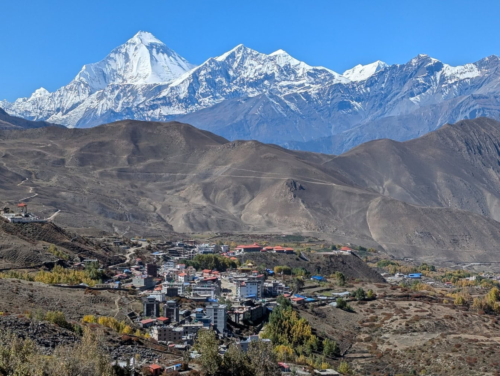

¿Planeas un viaje a Wachin City y no sabes por dónde empezar?
Lo cierto es que la ciudad ofrece una infinita cantidad de planes para realizar como turista, por lo que puede resultar difícil ordenar el itinerario. Con el objetivo de que tu viaje sea exitoso, te recomendamos que leas esta guía hasta el final, pues será tu herramienta esencial para planificar una visita inolvidable. Wachin City te espera con mucha historia, cultura y variada oferta gastronómica. Aquí te contamos todo lo que puedes hacer en esta fascinante ciudad.

Vista de la ciudad
Vista de la ciudad de Wachin City desde el aire, mostrando sus edificios y calles.

Baile tradicional
Un baile tradicional de la Wachin Fest, celebrada en conmemoración de la fundación de la ciudad.

Templo budista
Un templo budista en Wachin City, representativo de la cultura y religión local.
A continuacion aqui mencionaremos 3 zonas muy concurridas de Wachin City junto con una pequeña descripcion de estas.
Wachinopolis
Wachinopolis es un predio ubicado sobre la Avenidad Wang Ching, en
la Localidad de Wachin Street, Provincia de La Pampa.
- Recreacion y deporte: Dispone de juegos infantiles, estaciones de ejercicio
y areas de descanso. - Entorno natural: Los escenarios naturales que estan repletos de vegetacion son espacios saludables y esenciales para la formacion de los niños.
Alli los chicos socializan con sus padres a traves de actividades ludicas y deportivas. - Atractivos: Incluye una zona de muestra con replicas de dinosaurios, ademas de ser sede frecuente de eventos culturales,
como la Wachin-Fest y actividades culturales.
Wachintong DC
Es un barrio de clase alta, hogar de los descendientes del fundador.
Caracteristicas principales:- Ambiente: Comparado a otros barrios Wachintong tiene un tono mas maduro, tranquilo y sofisticado.
Con edificios con arquitectura vanguardista. - Arte y Cultura: Incluye el famoso museo Wachin Museum en el cual se pueden encontrar obras de arte asiatico tradicional,
un hermoso jardin japones y fotos historicas de la fundacion de Wachin City. - Gastronomia: Incluye cafes de moda, restaurantes organicos y la famosa casa de te del mercado de flores Los Wachines.
Wachin-Fest
Es la celebracion de la fundacion de la ciudad donde se tienen diversas actividades culturales, una fiesta geek y la clasica Danza del Dragon.
Caracteristicas principales:- Danza Del Dragon: Se trata de una danza acrobatica y fluida donde los bailarines
recorren todo el predio de Wachinopolis manipulando una estructura larga y flexible en forma de Dragon,
estos coordinan sus movimientos para que el cuerpo del dragon emule las ondulaciones de una serpiente gigante flotando en el aire.
Mientras persiguen a un bailarin que va adelante sosteniendo una esfera en un poste la cual representa la sabiduria y energia vital. - Puestos gastronomicos y ferias: Oferta de platos tipicos de la cocina asiatica,
ademas de stands de artesanias, decoracion y artes marciales. - Fiesta geek: Se trata de una fiesta organizada por loss jovenes amantes de los comics, anime y el cosplay. La cual se lleva a cabo el dia
la celebracion de la Wachin-Fest, siendo este un espacio principalmente orientado hacia la juventud del pueblo, aunque esta abierto para gente de todas las edades.
En esta fiesta se llevan a cabo bailes, competencias de Cosplay, proyeccion de peliculas, venta de mangas y comics. La misma se realiza
desde las 12 de la mañana hasta las 12 de la noche, el que mas aguanta recibe como premio la estatua de un dragon hecha de cristal.
Wachin Street
Es otro barrio que conviene visitar si no podés ir a Wachin-Tong D.C., ya que es mucho más económico. Cuenta con cines, restaurantes de comida china, bares y boliches. Además, en este barrio está el predio de Wachinópolis, donde se celebra el Wachin-Fest.
Características principales
- Ambiente y estética: calles angostas cubiertas de farolitos rojos y letreros de neón en español y mandarín.
- Pasaje Fortuna: callejón de restaurantes chinos. El "Gran Wok de Don Wachín" es el más popular, con su menú de 99 platos.
- Boliche Neón Sur: pista de baile con luces de colores y karaoke hasta el amanecer.